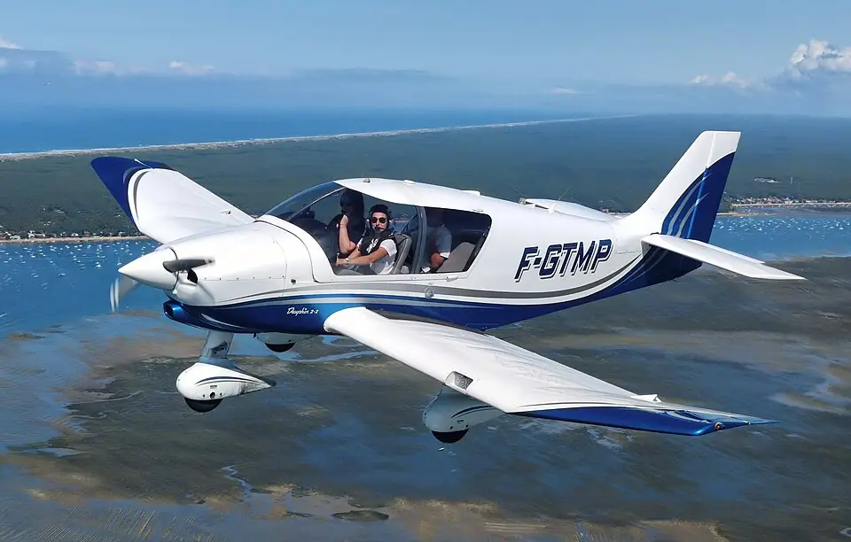
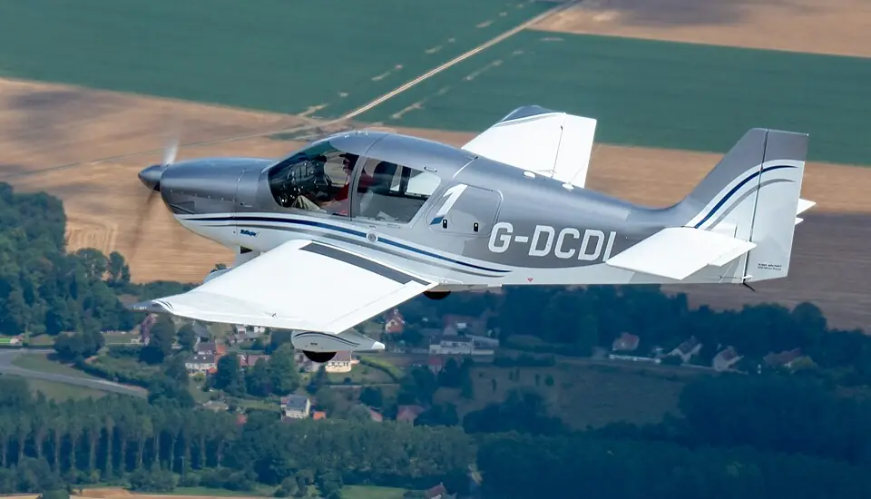

Photo : Dylan Agbagni · CC0 · CommonsL’avion des aéroclubs français
Le Robin DR400
Bois, toile, verrière coulissante et ailes à bouts relevés : c’est sur lui que des générations de pilotes français ont fait leur premier vol seul. Voici tout ce qu’un élève pilote doit savoir.
Un héritier des Jodel, construit en Bourgogne.
L’histoire
En 1957, Pierre Robin et l’ingénieur Jean Délémontez, co-créateur des avions Jodel, fondent Centre Est Aéronautique à Darois, près de Dijon. « DR » réunit leurs initiales. Le DR400 vole pour la première fois au début de 1972 : c’est une évolution du DR300, avec une cabine plus large aux épaules, une verrière coulissante vers l’avant à la place des portes, et une aile retravaillée pour un décrochage plus doux.
L’entreprise a changé plusieurs fois de nom et de propriétaire. Depuis 2014, le DR401, modernisé (écrans, volets électriques, versions diesel), a pris la suite. Aujourd’hui, le certificat de type appartient à CEAPR, toujours à Darois.
Sa construction
- Monomoteur à aile basse, quatre places (ou « 2+2 » pour les petites versions), structure en bois entoilée.
- Aile de type Jodel : le dièdre est concentré en bout d’aile, d’où ses bouts relevés.
- Train tricycle fixe, roulette de nez orientable.
- Volets métalliques manuels, trois positions : 0°, 15° (décollage), 60° (atterrissage).
- Empennage horizontal monobloc (tout l’empennage pivote) avec un tab anti-tab.
Même cellule, moteurs de 108 à 200 ch.
Les noms commerciaux ont changé plusieurs fois (« Major » ou « Dauphin » ont désigné des versions différentes selon les années). Le plus sûr est la désignation officielle, gravée sur la plaque de l’avion et dans son manuel.
| Désignation | Nom courant | Moteur Lycoming | Puissance | Masse max | Réservoirs |
|---|---|---|---|---|---|
| DR400/120 | Petit Prince, Dauphin, Dauphin 2+2 | O-235 | 108 à 112 ch | 900 kg | 110 L |
| DR400/140B | Major, Major 80, Dauphin 4 | O-320-D2A | 160 ch | 1 000 kg | 110 L |
| DR400/160 | Chevalier, Major | O-320-D2A | 160 ch | selon manuel | 110 + 2 × 40 L |
| DR400/180 | Régent | O-360 | 180 ch | 1 100 kg | 110 + 2 × 40 L |
| DR400/180R | Remorqueur, Remo | O-360 | 180 ch | 1 000 kg | 110 L |
| DR400/200R | Remo 200 | IO-360 (injection), hélice à pas variable | 200 ch | 1 100 kg | selon manuel |
| DR400/500 | Président (DR500) | IO-360, hélice à pas variable | 200 ch | 1 150 kg | 105 + 2 × 40 L |
Source : certificat de type EASA A.367 (édition 05, 2023). Un réservoir supplémentaire de 50 L existe en option. Masses en catégorie normale.
L’anémomètre du DR400, arc par arc.
Les vitesses limites sont les mêmes pour tous les DR400 (certificat de type). Les vitesses d’utilisation viennent du manuel de vol du DR400/180 : sur un 120 ou un 140B, plus léger, elles sont plus basses. En vol, seul le manuel de l’avion du club fait foi.
Décrochage du DR400/180 à 1 100 kg
| Inclinaison | 0° | 30° | 60° |
|---|---|---|---|
| Volets rentrés | 105 | 113 | 148 |
| Volets 15° | 99 | 106 | 140 |
| Volets 60° | 95 | 102 | 134 |
Vitesses indiquées en km/h, manuel de vol DR400/180. L’avertisseur sonne 10 à 15 km/h avant le décrochage.
Limites de structure
- Catégorie normale : +3,8 g / −1,9 g.
- Catégorie utilitaire (masse réduite) : +4,4 g / −2,2 g.
- Volets sortis : +2 g / 0 g.
- Vent de travers démontré (180) : 22 kt.
- Finesse (180) : environ 9,5 à 150 km/h : depuis 1 000 m, environ 9,5 km de plané sans vent.
Touche un élément pour savoir à quoi il sert.
Du hangar au parking, dans l’ordre.
D’après les procédures normales du manuel de vol DR400/180. Chaque aéroclub a sa propre check-list : c’est elle qui s’applique à bord. Coche les étapes pour t’entraîner à les réciter.
Combien de temps peux-tu voler ?
Six erreurs classiques d’élève sur DR400.
Le DR400 face aux autres avions de formation.
Touche un titre de colonne pour trier. Chiffres de fiche technique, pour comparer, pas pour voler.
